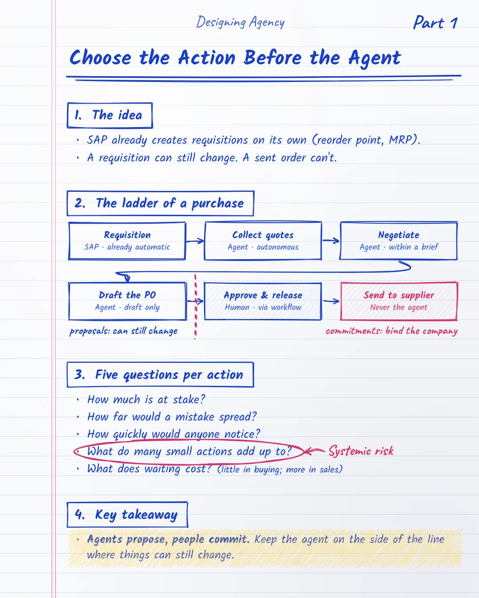

Blog / AI agents and governance / Designing Agency
Choose the action before the agent
Enterprise systems have automated some steps for decades. The question is which steps to hand to an agent, not whether to automate
Long before anyone spoke of AI agents, planning systems were creating purchase requisitions without asking anyone. When the stock of a material falls below its reorder point, or a planning run finds a future shortage, the system proposes a replenishment on its own.
Nobody loses sleep over this. A requisition is an internal proposal: it can be changed, rescheduled or deleted at almost any time. A purchase order is different. Once it is approved, released and sent, the supplier plans around it and the company is committed.
That distinction, between proposals that can still change and commitments that bind, is the right place to start with agents. The question is not whether an agent should act. It is which actions it should take, and which stay with people.
The ladder of a purchase
| Step | Who acts | What it changes | Can it be undone? | Sensible autonomy |
|---|---|---|---|---|
| 1. Requisition from reorder point or planning run | The planning system, by configuration | An internal proposal | Yes: change or delete | Already automatic |
| 2. Collect quotes, compare suppliers, check contract terms and price history | Agent | Nothing; information only | Nothing to undo | Autonomous |
| 3. Negotiate within a written brief | Agent | Messages to outsiders | Words cannot be unsent, but nothing binds | Bounded |
| 4. Draft the purchase order with sources and reasons | Agent | A draft that anyone can change | Yes: discard | Autonomous, draft only |
| 5. Approve and release | A person, chosen by rules the business owns | The order becomes valid | Partly | Human |
| 6. Send to the supplier | The purchasing system, after release | A commitment outside the company | No: only compensate | Never the agent's decision |
Steps 1, 2 and 4 are on the safe side of the line: they create information or proposals that can be changed. Steps 5 and 6 are on the other side. Step 3 is the one that needs the most thought.
The same line elsewhere
The ladder is not special to purchasing. Every domain has a point where a proposal becomes a commitment.
| Domain | Proposal: can still change | Commitment: binds or changes the world |
|---|---|---|
| Finance | A prepared payment run | Payments released to the bank |
| Customer service | A drafted reply and a suggested goodwill credit | The credit issued to the customer's account |
| Infrastructure operations | A change plan with a rollback step | The change applied to production |
| Industrial systems | A recommended setpoint | The setpoint written to a controller |
The design question is the same each time: where exactly is that line, and on which side is the agent allowed to work?
Five questions for each action
To place any action on the ladder, ask five questions.
- How much is at stake? Transaction value is the obvious one, but not the only one.
- How far does a mistake spread? A wrong requisition affects one material. A wrong order to a sole supplier can stop a line.
- How quickly would anyone notice? An error caught in an approval queue costs a minute. One found at goods receipt costs weeks.
- What do many small actions add up to? A hundred autonomous requisitions under every individual limit can still be one large commitment. Limits need to apply across actions, per supplier and per period, not only to each action.
- What does waiting cost? In procurement, usually little: a draft in a queue keeps every option open.
Negotiation: the step in the middle
An agent negotiating with suppliers creates no records, yet it changes things that matter: relationships, expectations and what a supplier believes was agreed. That is why it needs a written brief: target price, walk-away point, what it may disclose, and a plain rule that it cannot accept, commit or sign. Every message should be logged against the requisition it relates to. The brief turns negotiation from open-ended agency into bounded agency.
Safin and Balta call these moves tool fencing, which limits a required tool to the operations and targets the task warrants, and write staging, which puts a draft or pending layer between an agent's action and its authoritative commit, until the staged output is explicitly promoted.1 Both are properties first. A fence might be a narrowly scoped credential, a restricted tool interface or a rule in the application itself; staging might be a draft status, a separate pending table or a change request.
Sales: when waiting has a price
Sales looks different at first. If a customer asks for a quotation and the reply takes two days, the customer may go elsewhere. Waiting has a cost of its own, and that is an argument for speed.
It is not an argument for removing the decision. The agent can assemble the quotation in minutes: prices, availability, delivery dates and the margin effect of any discount. Committing a discount, a delivery date or credit terms is the same kind of step as sending a purchase order: a promise to someone outside the company. The cost of waiting justifies a faster approval path, with the right approver, a deadline and an escalation route. It does not justify skipping one.
Infrastructure and industrial operations sharpen the point. There, waiting can itself cause harm, and the safe default may be a protective action, such as stopping a process, rather than doing nothing. That does not remove the line; it moves the question to which protective actions an agent may take on its own and which recoveries still need a person.
Proportional checks
Researchers at Luiss University propose classifying agent actions into risk tiers: Green for low-risk retrieval, Yellow for monitored operations, Red for high-consequence actions. Green actions proceed on their own; Red actions require human approval or an explicit justification that links the action back to the original request.2 On the ladder above, steps 2 and 4 are Green, step 3 is Yellow, and steps 5 and 6 are Red.
Part 2 takes the “can it be undone?” column and asks what undoing actually means.
Notes

Sources
- Damir Safin and Dian Balta, Autonomy and Agency in Agentic AI: Architectural Tactics for Regulated Contexts, arXiv preprint, May 2026.
- Giorgio Piccardo, Giuseppe F. Italiano and Alessio Martino, The Agentic Kill Chain: A Cognitive Threat Framework for Autonomous Agent Ecosystems, CEUR Workshop Proceedings, Vol. 4198.